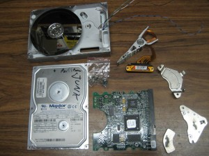
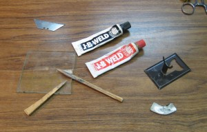
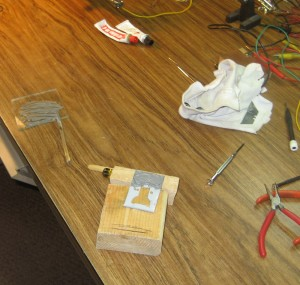
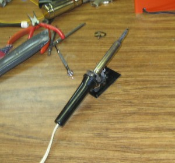
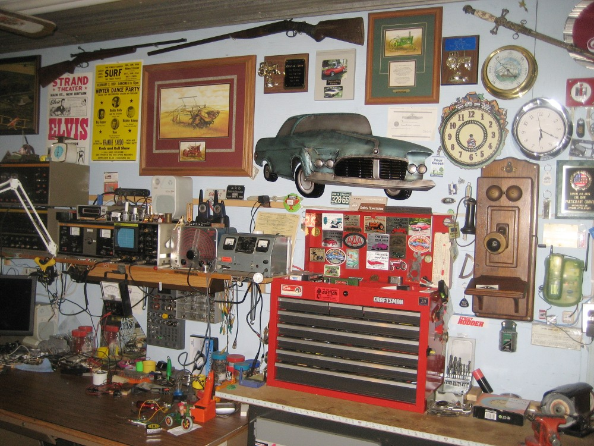

2nd January 2012, 12:22 pm

Too good to throw out not good enough to use
I have always been curious about how things are made. I often take things apart just to see what is inside. Above is a hard drive I took apart the other day. one of the interesting things were the magnets. they are the strongest magnets I have ever played with. The flat curved piece in the lower right of the above picture is the magnet after I pried it off the bracket in the lower right corner.
the pile of parts got pushed aside on my work space while I started another quick project. While laying my soldering iron down I tipped the cheap tin rest over. This was very annoying. The thin strong magnet came to my mind. It fit perfectly under the tin rest and held it firmly to the bench top. I just needed to fasten the magnet to the rest, so I could move it around easily.

Naturally I reached for the J B Weld. A good coating and I pushed the magnet in tight.  I spotted a piece of foam and put on the bottom. That way I didn’t have to clean up the J B Weld I had over most of the bottom. It also keeps the rest from scratching the desk surface. The rest now stays firmly in one place but is also easily moved. No more tipping over when you bump the cord or Iron. A simple fun project making use of junk.
1st January 2012, 01:23 pm
2011 passed very fast. I stayed busy but didn’t get many of my planned projects finished. Looking back I realise that it really doesn’t matter. It was a great year and I had much fun. I didn’t keep up the web site. I started many posts but never seemed to finish anything. The weather was rainy and stormy in the spring, which kept me very busy cleaning up broken trees. Then it turned dry and sunny for the rest of summer and I spent most of my time outdoors.
Below is a picture of metal car on my shop wall. It was a Birthday gift from my Son, Daughter-in-law and two Boys. They have a knack for picking gifts that this old man loves.
I spend a lot of time in my shop and it is filled with things. Every thing has a story, a memory and sometimes a use. Sometimes I just sit and look and let the good memory’s flood in. Friends and good times, long since past, come awake again.
I have always loved to tinker. At a early age I started taking things apart just to see what was inside them, and what made them work. Looking back I can see my father was very tolerant. I was encouraged to disassemble junk items rather than good stuff and allowed full access to his workshop and tools. Over time I learned to put things back together again and eventually I made my living doing just that.
You will also note the old wood wall mount telephone on the wall. I found it in Arkansas last winter when we were south. My memory identifies it as a match to the one on kitchen wall when I was a child. I was always fascinated by the old telephone with a crank on the side instead of a dial. There were 8 to 10 people on the party line. When any phone rang, all the phones rang. needles to say privacy was non-existent. No one would admit “Rubbering”, as listening in was then called. With no electricity limiting radio use, small children and lots of hard work, the diversion of “Rubbering” was understandable.
My mother was too busy to listen to the radio one morning when the phone rang. It was the local radio station’s morning quiz show. They asked a question that would have been simple had she been listening to the show. Her mind was so busy with the days work it just couldn’t move onto the question. The clocked ticked off as she stood silent by the phone. Suddenly a woman’s voice blurted out the answer and my mother was declared the winner of a small gift certificate at one of the show sponsors. My mother would have been glad to share the gift, but no one would ever admit to being the voice. I must add, that unlike today, the tone quality of the old phones was very poor. Recognising the voice for sure was impossible.
Quite a change from the wireless phone next to it. I just couldn’t resist buying that old phone even though it doesn’t work, but that is a future project.
